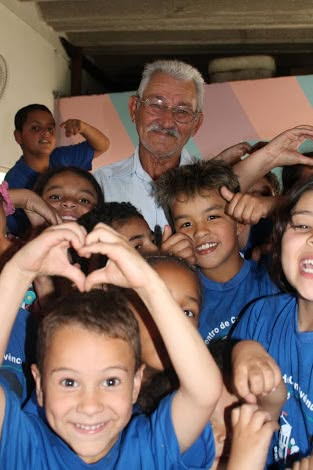
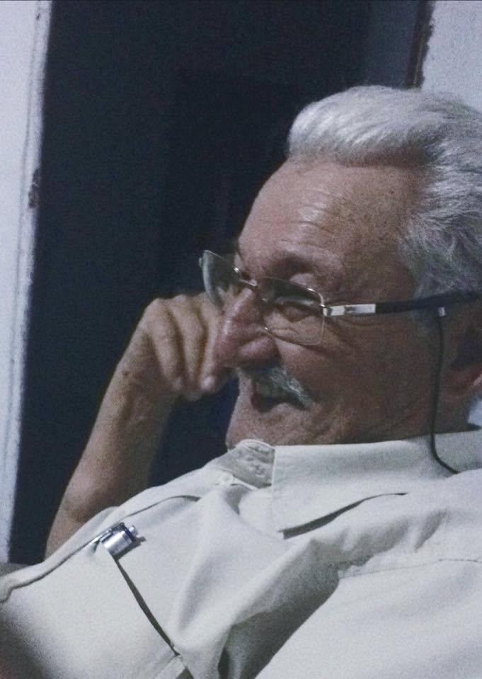
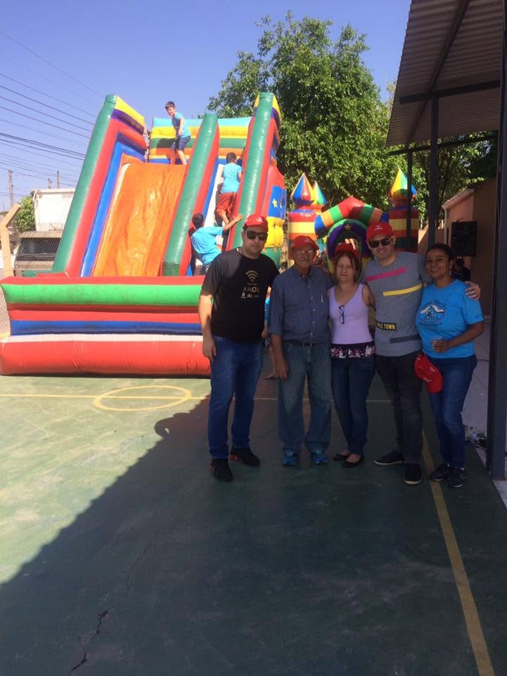

Um lugar de acolhimento construído por muitas mãos — como as da nossa logo.
O Centro de Convivência Ação e Paz nasceu em 1994, no bairro Parque Vitória Régia, em Sorocaba, pelas mãos de um senhor humilde e de coração enorme: o Seu Carlos, carinhosamente conhecido como Tio Carlos. Ele percebeu que muitas crianças passavam o dia sozinhas enquanto os pais trabalhavam — e decidiu acolhê-las.
O que começou com poucas crianças reunidas num espaço simples cresceu e virou referência de acolhimento no bairro. Ao longo de mais de 30 anos, mais de 1.500 crianças encontraram aqui reforço escolar, alimentação, cuidado e afeto.
Hoje seguimos com o mesmo propósito de sempre: garantir que nenhuma criança fique para trás.


Fundador do CIS · Em memória — 15 de junho de 2018
Tudo começou com um homem simples e de coração generoso. Em 1994, o Tio Carlos abriu as portas para as primeiras crianças e deu vida ao Centro de Convivência Ação e Paz.
Com a sua carriolinha, ele batia de porta em porta pelo bairro para arrecadar alimentos, e cuidava com carinho da horta que existe até hoje no CIS. Movido pela generosidade e pelo amor ao próximo, transformou o desejo de cuidar num lugar de acolhimento que atravessa gerações.
O Tio Carlos partiu em 15 de junho de 2018, mas o que ele plantou não parou de crescer.
“O Tio Carlos deixou um legado — um legado que dinheiro nenhum paga: o legado do amor.”▶ Assista Tio Carlos contando o motivo de ter fundado o Cis
Mesmo depois da partida do Tio Carlos, o cuidado que ele plantou não parou. Da mesma geração do Seu Carlos, a Tia Cidinha e a Tia Cris seguem à frente do CIS até hoje, mantendo viva cada semente que ele deixou.

Da geração do Seu Carlos, segue cuidando das crianças do CIS com o mesmo carinho de sempre.
Presente até hoje, mantém viva a missão de acolher e proteger cada criança que chega ao CIS.
Acolher e apoiar o desenvolvimento integral de crianças em situação de vulnerabilidade, oferecendo educação, cuidado e afeto no contraturno escolar.
Ser referência de proteção à infância em Sorocaba, quebrando ciclos de vulnerabilidade por meio da educação e do acolhimento.
Respeito, afeto, transparência, compromisso com cada família e a certeza de que ninguém cresce sozinho.
Tio Carlos funda o CIS e acolhe as primeiras crianças do bairro.
Em 15 de junho, o Tio Carlos parte. A Tia Cidinha e a Tia Cris dão continuidade ao legado.
Inauguração do espaço de esporte e cultura, com oficinas de arte e música.
Mais de 480 crianças já atendidas e uma rede de 60 voluntários ativos.
"O CIS cuidou de mim boa parte da minha vida, enquanto meus pais trabalhavam. Tive acolhimento, aprendizado e experiências que me trouxeram até aqui. Hoje quero retribuir tudo isso."
"Aqui as crianças não são um número. Cada uma tem nome, história e um voluntário que se importa de verdade com o seu futuro."
O CIS existe graças a pessoas que decidem ajudar. Você pode ser uma delas.